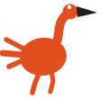

Flamingo Кабинет преподавателя · создать урок Адель · ВыйтиМожно выбрать пальцем, можно набрать. Время потом видно всем — и вам в расписании, и классу на приглашении.
Экран задаёт ровно один вопрос и отвечает на него нажатием, а не набором. Пройденное сжато в строку наверху и остаётся видимым — «шаг 2 из 3» и уже введённое название. Рассчитан на планшет и на пять минут между уроками: читается с вытянутой руки, попасть можно не глядя.
Три экрана вместо одного там, где учителю нужно поменять одну строку. Мастер хорош на первом уроке и мешает на сотом — значит рядом обязана быть быстрая дорога («повторить прошлый»), иначе он превратится в повинность.
Та же таблица занятий, что и в А. Плюс черновик: если шаги живут между заходами, незаконченный урок надо где-то держать — иначе закрытая вкладка стирает работу.